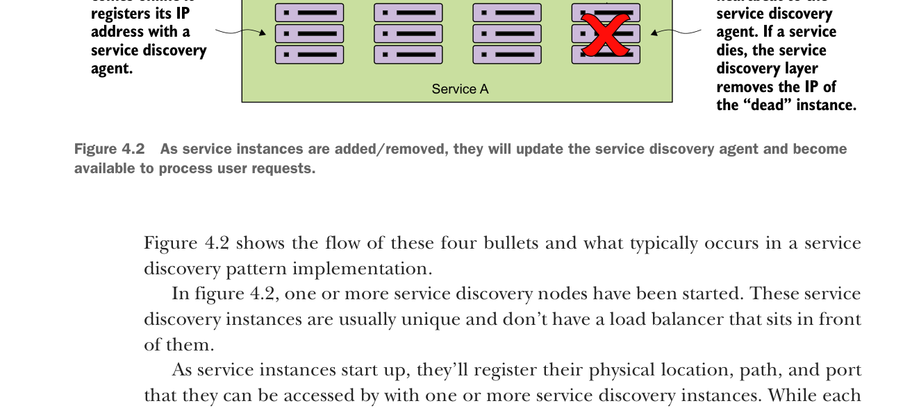

As service instances are added/removed, they will update the service discovery agent and become available to process user requests.
Figure 4.2 shows the flow of these four bullets and what typically occurs in a service discovery pattern implementation.
In figure 4.2, one or more service discovery nodes have been started. These service discovery instances are usually unique and don’t have a load balancer that sits in front of them.
As service instances start up, they’ll register their physical location, path, and port that they can be accessed by with one or more service discovery instances. While each instance of a service will have a unique IP address and port, each service instance that comes up will register under the same service ID. A service ID is nothing more than a key that uniquely identifies a group of the same service instances.
A service will usually only register with one service discovery service instance. Most service discovery implementations use a peer-to-peer model of data propagation where the data around each service instance is communicated to all the other nodes in the cluster.